So far we have operated on signals by altering the magnitudes of their windowed Fourier transforms, but leaving phases intact. The magnitudes encode the spectral envelope of the sound. The phases, on the other hand, encode frequency and time, in the sense that phase change from one window to a different one accumulates, over time, according to frequency. To make a transformation that allows independent control over frequency and time requires analyzing and reconstructing the phase.
| 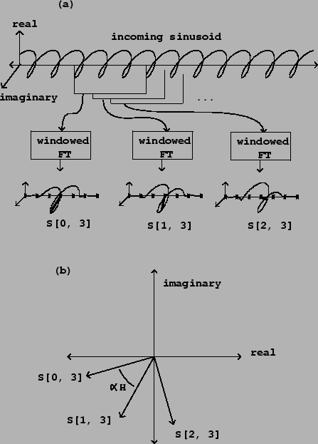 |
In the analysis/synthesis examples of the previous section, the phase of the output is copied directly from the phase of the input. This is appropriate when the output signal corresponds in time with the input signal. Sometimes time modifications are desired, for instance to do time stretching or contraction. Alternatively the output phase might depend on more than one input, for instance to morph between one sound and another.
Figure 9.10 shows how the phase of the Fourier transform
changes from window to window, given a complex sinusoid as input. The
sinusoid's frequency is
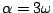, so that the peak in the Fourier transform
is centered at 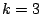. If the initial phase is 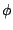, then the neighboring
phases can be filled in as:
When computing phases for synthesizing a new or modified signal, we want to maintain the appropriate phase relationships between successive resynthesis windows, and also, simultaneously, between adjacent channels. These two sets of relationships are not always compatible, however. We will make it our first obligation to honor the relations between successive resynthesis windows, and worry about phase relationships between channels afterward.
Suppose we want to construct the 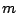th spectrum 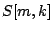 for resynthesis (having already constructed the previous one, number 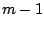). Suppose we wish the phase relationships between windows and to be those of a signal 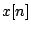, but that the phases of window number might have come from somewhere else and can't be assumed to be in line with our wishes.
| 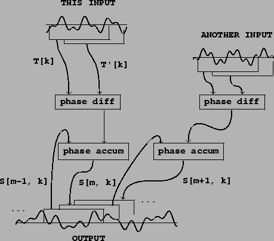 |
| 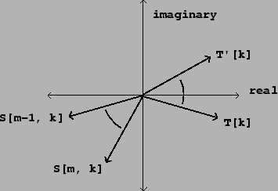 |
To find out how much the phase of each channel should differ from the previous
one, we do two analyses of the signal , separated by the same hop size
that we're using for resynthesis:
If the desired magnitude is a real number 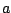, then we should set
to:
If we want to end up with the magnitude from the spectrum 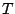 as well, we can
set 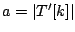 and simplify: